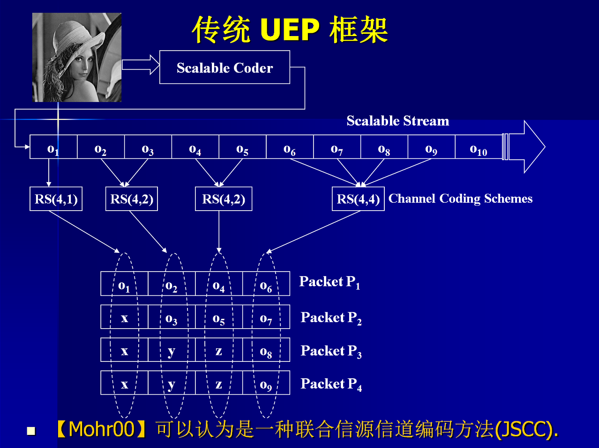

Research & Development Experience
2009.10–2011.10, PostDoc, Norwegian University of Science and Technology (NTNU), Trondheim, Norway.
| Next Generation Wireless
Networks, I am supervising a
Ph.D. candidate
who works in network operator company. We are focusing the load
balancing and scheduling schemes in overlay heterogeneous wireless
networks as well as the revenue management. Several papers have been
produced in this subject. For load balancing, we distribute elastic applications among the avaiable networks with prioritied streaming application. Based on the remaining size of elastic applications, candicates are selected with the optimal handover size threshold. |
2009.10–2011.10, Project Manager & Key Contributor, NTNU, Trondheim, Norway.
| Serious
Gaming as Research
Platform
and for
University Recruitment, the
game World of NTNU (WoN) has been
developed. I am responsible for architecture design, framework
programming and progress control. WoN is massive multiplayer online game which is based on open source code. |
2004.09–2009.07, Project Manager & Key Contributor, GUCAS, Beijing, China.
| Deep Space Communication Testbed Development, the testbed consists of four key components: space link emulation, cross traffic generation, application development and QoS parameters measurement. I am responsible for architecture design, framework programming and progress control. |
2004.09–2009.07, Principal Researcher, GUCAS, Beijing, China.
| QoS in Ad Hoc Networks, the research mainly focuses on cross-layer design of routing and medium access control in ad hoc networks. Routing information is utilized to guide the competition of shared medium. I have proved that the intra-flow contention is unnecessary. Further more, route-based MAC which setups proper coordination among downstream andupstream neighbors is proposed to eliminate intra-flow contention. |
2004.09–2009.07, Researcher, GUCAS, Beijing, China.
|  | Video Transmission for Deep Space Communications, I have proposed an opportunistic decoding method to enhance the reconstruction of video frames based on unequal erasure protection. This method is favored by space communications as it requires no change at the source and it maximally exploits received packets which are extremely precious in space communications. |
2004.09–2009.07, Researcher, GUCAS, Beijing, China.
| Protocol Development and Research for Deep Space Communications, to cope with the adverse environment of space communications, CCSDS has designed and issued protocols for space communications. This project is to implement and test the performance of CCSDS protocols and to propose improving measures. |
2004.09–2009.07, Engineer, GUCAS, Beijing, China.
| Satellite Communications, I am in charge of the overall system architecture, technology selection and application test. A video streaming system has been established with satellite communication support. |